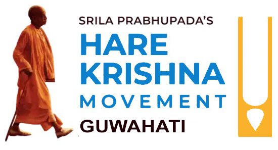

A spiritual haven of peace, devotion, and Vedic culture situated on the pristine northern bank of the sacred Brahmaputra River.
Hare Krishna Movement, Guwahati is a registered non-profit religious and charitable trust (spiritually mentored by ISKCON Bangalore). Our foundational vision is to cultivate a simpler, healthier, and more natural way of life through spiritual wisdom, cultural values, and selfless social welfare.
The Hare Krishna Movement was brought to the whole world in this modern age by His Divine Grace A.C. Bhaktivedanta Swami Prabhupada (addressed with devotion as "Srila Prabhupada"), Founder-Acharya of the worldwide Hare Krishna Movement. By his deep devotion to his spiritual master, Srila Bhaktisiddhanta Sarasvati Thakura, and Lord Sri Krishna, he spread the sublime mission of Sri Chaitanya Mahaprabhu worldwide.
Spreading the timeless message of peace through Harinama Sankirtan, distribution of Srila Prabhupada’s authentic Vedic literature, and free sanctified food (Sattvik Prasadam), Hare Krishna Movement Guwahati translates devotional prayer into active social compassion across Northeast India.

Registered Charitable & Religious Trust | Mentored by ISKCON Bangalore
Transforming prayer into tangible relief for patients, caregivers, and underserved families across Northeast India.
Pure for Cure was founded on the timeless vision of His Divine Grace A.C. Bhaktivedanta Swami Prabhupada — Founder-Acharya of the Worldwide Hare Krishna Movement — whose directive was simple yet profound: "No one within a ten-mile radius of a temple should go hungry."
Based in Guwahati, Assam, we distribute freshly cooked, sanctified food (Sattvik Prasadam) to patients, hospital caregivers, orphaned children, the elderly, and underserved communities across India's North Eastern region — and growing.
"To offer pure, sanctified food (Prasadam) with affection to patients, caregivers, underserved communities, and everyone in need at hospitals, orphanages, old age homes, slums, and wherever required — thereby addressing hunger and malnutrition while nurturing the spirit of selfless service."
Inaugurated by Hon'ble MLA and respected dignitaries at Hare Krishna Movement Campus, Ghorajan.
Grounded in timeless Vedic culinary science and modern nutritional biochemistry. Learn why our food is pure, healing, and offered to Lord Sri Krishna.
Pure for Cure is our non-negotiable dietary and healing philosophy. It defines food that is prepared in the highest mode of material nature – Sattva Guna (the mode of goodness, purity, and light).
Our eternal spiritual master and visionary guide whose compassionate mandate birthed the worldwide food relief movement.

Our Founder-Acharya of Worldwide Hare Krishna Movement
"No one within a ten-mile radius of a temple should go hungry. I want you to distribute sattvik meals to everyone who comes."
— Srila Prabhupada's Compassionate InjunctionIt is with the heartfelt determination to fulfill this instruction that devotees at Hare Krishna Movement Guwahati conduct all charitable and devotional initiatives based on the authentic teachings of the Bhagavad Gita and Vedic scriptures.
Srila Prabhupada travelled across oceans at the advanced age of seventy to give the sublime treasure of Krishna consciousness to the entire world. He taught that genuine charity must nourish the soul as well as the body. Through Pure for Cure, his message of sanctified sattvik meals is served every day with love to thousands of people in Assam.
Grounded in Vedic wisdom, our philosophy synthesizes selfless social welfare with deep spiritual upliftment and compassionate community healthcare support.
Following timeless Vedic traditions, we advocate a harmonious lifestyle centered on natural sustainability, clean habits, inner purity, and devotion to God.
Food prepared with love and offered with gratitude to the Lord becomes Sattvik Meals. Pure for Cure brings mental peace, happiness & nourishes both body and soul.
Serving hospitalized families without discrimination. We channel volunteer dedication towards relieving pain, hunger, and vulnerability for patients and caregivers across Assam.
Meet the dedicated volunteers, hospital coordinators, drivers, and community volunteers working tirelessly to ensure no caregiver sleeps hungry.

Join our weekend Distribution Drives, assist at hospital kiosks, or participate in central kitchen cooking. Experience the joy of selflessly serving patient caregivers.
Join as a VolunteerSponsor fresh Sattvik meals for hospital attendants.Section 80G tax exemption with e-Receipt.